Lesson 1: Lists Explore
Summary: In Lesson#1, we developed a mental model for how computers store and access lists of information using variables. We used a digital Manipulative to further our understanding. We learnt that a list is created by a variable and has an index beginning at zero.
Question: Match the index with the values
var myNumbers = [32,64,33,0,15,26,3]
- myNumbers[4]
- myNumbers[0]
- myNumbers[3]
- myNumbers[1]
|
- 15
- 32
- 0
- 64
|
Lesson 2: Lists Investigate(Part 1)
Summary: We investigated and modify sample apps that use lists learn common programming patterns with lists.
Different types of list patterns
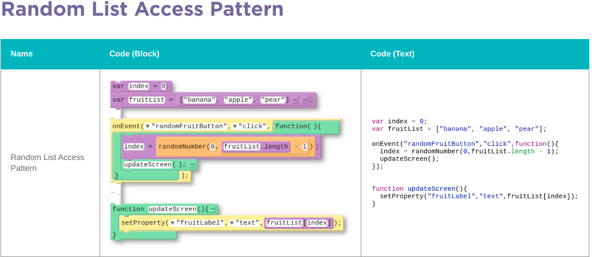
The user is interested in seeing items in a list, like a list of favorite foods, or a list of reminders.The app shows the user one item in the list at a time.
By clicking buttons (or otherwise interacting with the app) the a new random item in the list is shown to the user.This pattern allows a user to see random elements in a list. In order to make it work, create an index variable and a list. Then generate a random number between 0 and the length of the list minus one and set the index to that value. Then update the screen.
Lesson 2: Lists Investigate(Part 2)
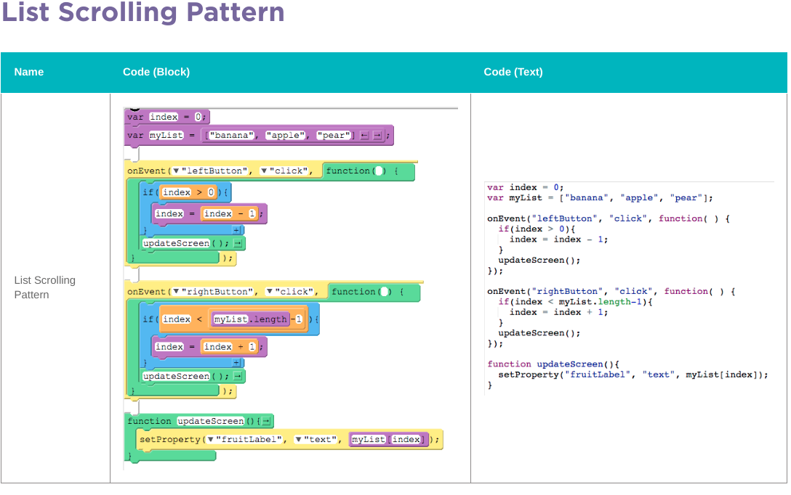
The user is interested in seeing items in a list, like a list of favorite foods, or a list of reminders.The app shows the user one item in the list at a time. By clicking buttons (or otherwise interacting with the app) the user can move back and forth through the list, one item at a time, to see every item. This pattern allows a user to "scroll" through all the items in the list. In order to make it work, create an index variable and a list. Then use the "Counter Pattern with Boundary" pattern to create event handlers to change the value of the index.This pattern makes sense to use with the updateScreen pattern since you will need at least two buttons for scrolling left and right through the list but afterwards will use the same code to update the screen.
Lesson 3: Lists Practice
Summary: We practice programming with lists through a set of programming puzzles adn debugging apps.
-
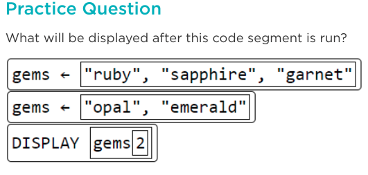
Answer: "emerald"
-
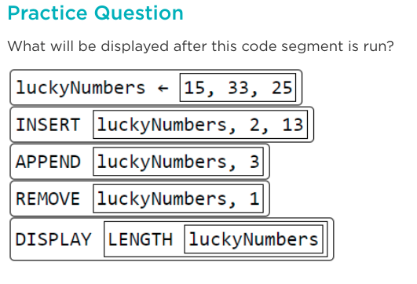
Answer: 4
Lesson 4: Lists Make
Summary:In Lesson#4, we made a Reminder app that uses lists and programming patterns with lists.
CFU: We analyzed, and replicated a Reminder App by trying to coding the app from scratch.
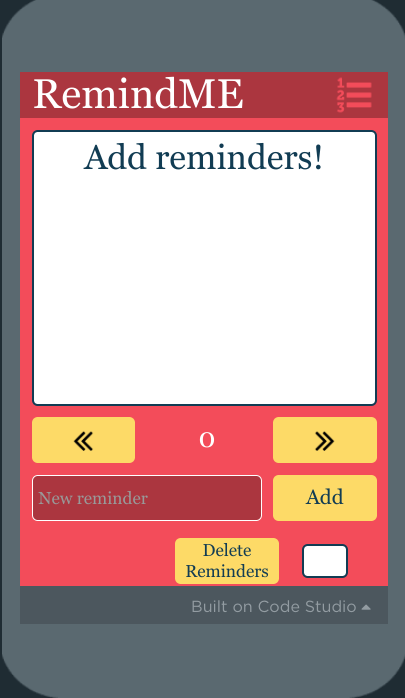
Lesson 5: Loops Explore
Summary: In Lesson #5, we discovered how computers repeat instructions over and over using loops. Loops are used as a counting loop to execute a block of code a certain number of times.
CFU:When breaking a problem down, you often encounter elements that you want to use repeatedly in your code. Sometimes it's appropriate to write a new function; at other times it's appropriate to write a loop.
There is no hard-and-fast rule as to which is better, but what do you think? What kinds of circumstances would lead you to writing a function versus using a loop?
Answer: For me, I prefer to utilize the same bits of code I previously wrote as many times as I am allowed so that I can get the most use out of what I am creating, and it is easier to solve a bug. Therefore, I do not want to get confused and would opt to write additional code. Loops can get confusing if you don't know what it does or how to use them.
Lesson 6: Conditionals Investigate
Summary: We investigated and modified sample apps that use loops and learn common programming patterns with loops.
CFU: Think back on the Font Tester App. Can you think of an example of another app or feature of an app which would use a loop to control different elements on a screen?
- A photo editor app may use loops to control properties such as image size, image colors, image brightness, etc.
- check the grade of every student in the class, we loop from 1 to that number
- Count how many number in a list
Lesson 7: Loops Practice
Summary: In Lesson #7, we Practice programming with loops through a set of programming puzzles and debugging apps.
CFU:
-
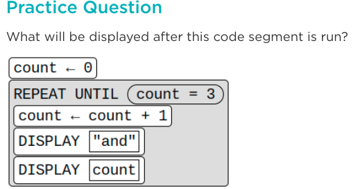
Answer: "and 1 and 2 and 3"
-
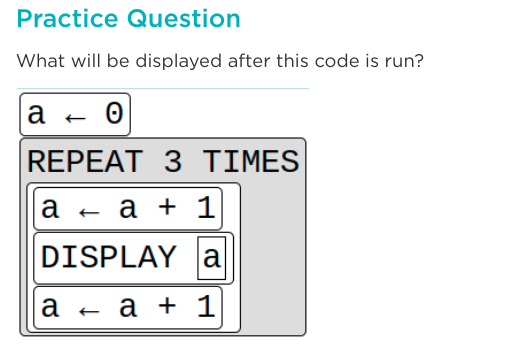
Answer: "1 3 5"
Lesson 8: Loops Make
Summary: We practiced making an app that uses loops and programming patterns with loops.
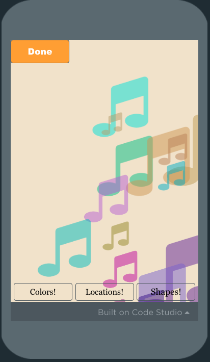
Lesson 9: Functions Explore / Investigate
Summary: In Lesson#9 explored how computers use loops to traverse and process lists of information. Traversing is the process of accessing each item on a list at one time using a loop and a boolean expression.
CFU: Why is traversal with a for loop a good method for accessing and updating items in a lengthy list?
- You want to process every item in the list in a similar way, you can use a loop to iterate through every item and take some action with it.
Lesson 10: Traversals Investigate
Summary: In Lesson #10, we investigated and modified sample apps that use traversals.
CFU: Explain how you would filter the dog dataset using traversal to have a filtered list of dogs who live long lives.
The for loop would filter the list by labeling dogs who live a maximum life span of 10 years or less as dogs who live short life. Dogs with a maximum life span greater than ten and less than 16 would be filtered into the list of dogs with an average life span. Lastly, dogs with a maximum life span of 16 years or greater would be filtered into a list of dogs who live long lives.
Lesson 11: Traversals Practice
Summary: We practiced programming with list traversals through a set of programming puzzles.
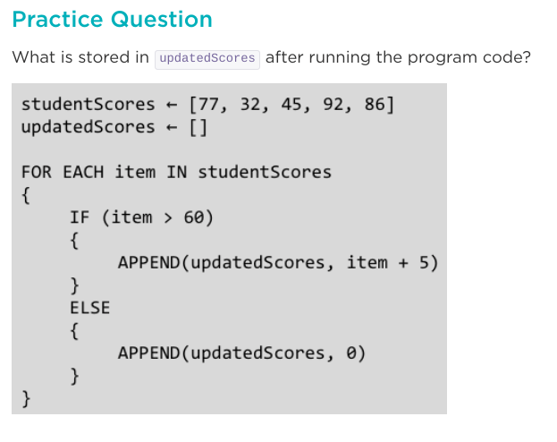
Answer: [82, 0, 0, 97, 91]
Lesson 11: Traversals Make
Summary: We practiced making an app that processes a list from a data set using traversal.
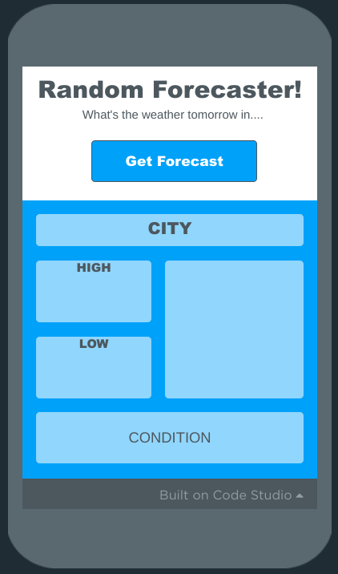
Lesson 13,14,15,16,17
Summary: In Lessons 13 to 17 we desgined our own apps. The app is to make a choice and produce a result based off the conditions it was given. The app I created spreads awareness about the endangered animals in Canada.
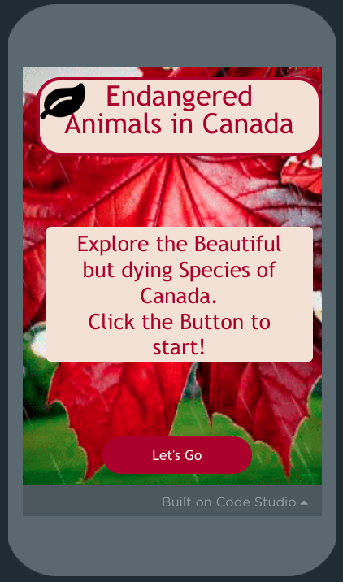